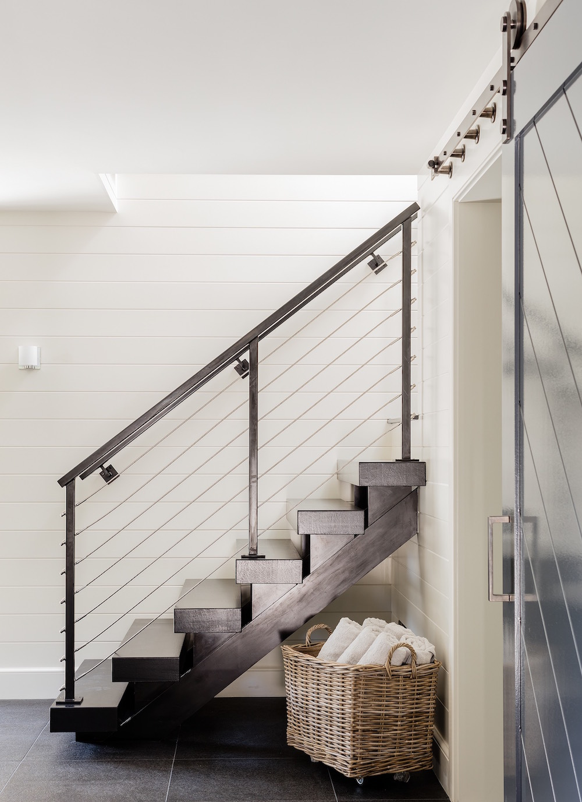
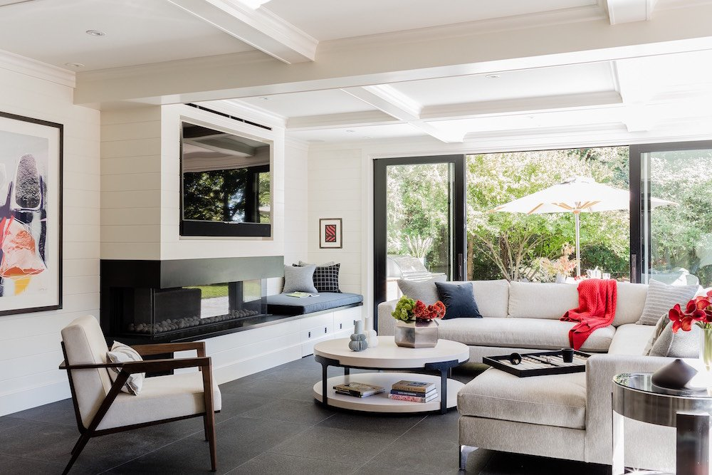
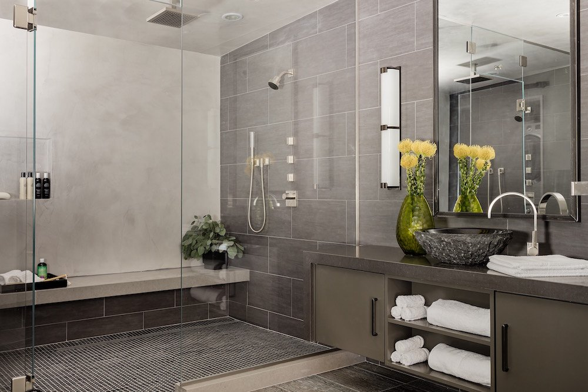
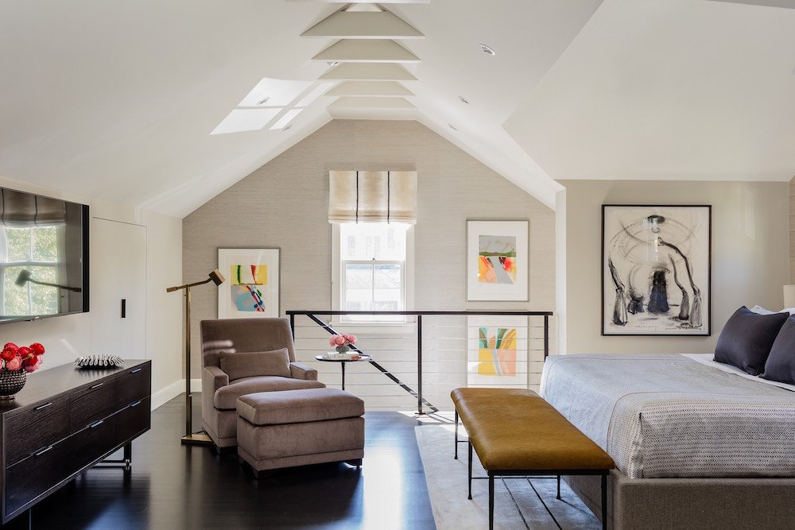
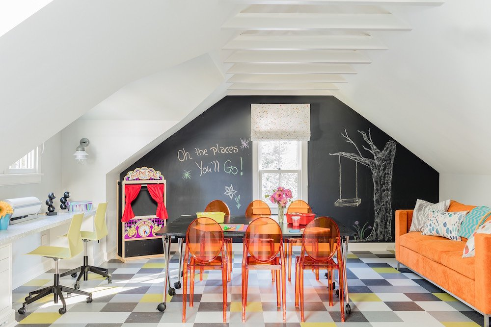
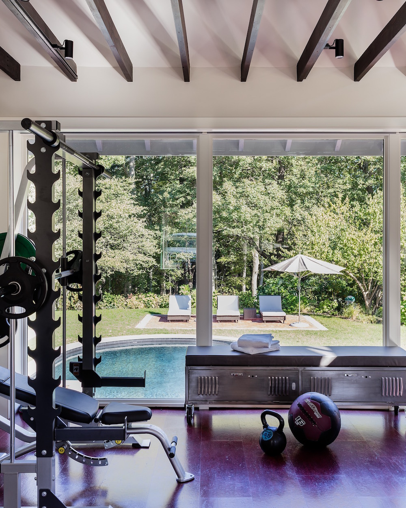
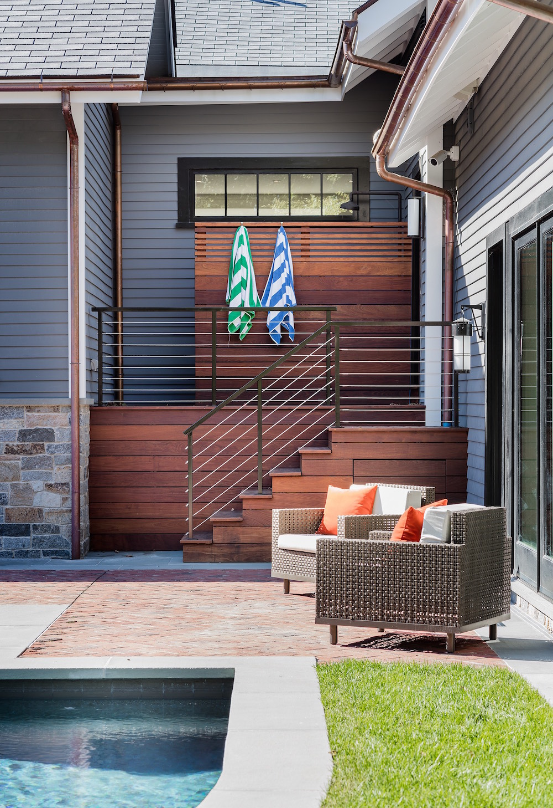
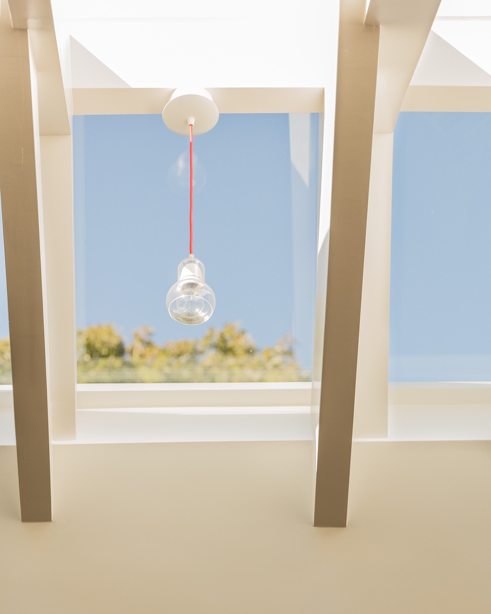

Project Details
Restoring nearly two centuries of craft in Brookline.
Carriage House is the careful restoration of an 1840s structure in Brookline, Massachusetts. The project navigates the demands of historic preservation and contemporary use — preserving the character and material authenticity of the original building while accommodating the needs of modern habitation.
Rehabilitated from an early Boston merchant's estate, the building found new life as an in-law suite, gym, pool house, and playhouse for the owners' daughters. The renovation honors the vernacular of historic New England while playfully pushing the boundaries of more contemporary design.







